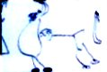

Like many other innovative works of art in history, the function of Alfred Jarry's Ubu Roi has evolved with its relationship to the cultural establishment. Since shocking the complacent French theatre audience and inspiring the avante-gardists in 1896, Ubu Roi has become an established classic. Its eventual association with middle Twentieth Century absurdist theatre gave it a genre, and thus secnre, and thus secured its place in the theatre repertoire. Contrary to its original shock value, for Regina's Curtain Razors, it became a vehicle for some interesting multimedia ideas.
Although the use of film in conjunction with theatre can be attributed to the multimedia approaches of dada, accounts of Jarry's objectives for the scenery suggest anticipation of the then non-existent medium: "Bold crosscuttthe then non-existent medium: "Bold crosscutting is the rule rather than the exception ... No scenic machinery could be flexible enough to allow for the changes called for in the text ... he envisaged an abstract set ..." (Shumacher, 48). The set used, painted by Jarry and several high-profile Paris artists, also suggests a cinematic treatment, "You will see doors on fields of snow under a blue sky, mantelpieces adorned with clocks which will split open to serve as doors, and palm tree growing at the foot of beds so that small elephants perched on shelves can nibble at them" (Shumacher, 49)umacher, 49).
Using modern film techniques, the Curtain Razors' production design went beyond Jarry's imagination for juxtaposing images. The relationship of the backdrop to dramatic setting was sometimes difficult to follow, but it did not matter. Like all aspects of the play, the immediate interplay of visual events was more important than the conscious logic. Particularly interesting were a red dye movement against a cycling race during a battle scene and a crack in a sidewalk moving vertically into tree branches, as if the crack itself were a tree trunk, absurdly growing to no end. Other photographic sequences were used in more conventional ways to simulate settings, such as the candles and rock walls used during the cave scenes.
If the film sequences were a distraction from the dramatic performances, this effect was minimized throug this effect was minimized through costume. Aside from Pa and Ma Ubu, the actors wore identical shirts, cycling shorts, and disposable aprondisposable aprons. The simplicity of costume served to emphasize movement and gesture, while the films supplied the imagery. Keith Beaumont lists simplicity as one of Jarry's aims, "firstly, he wanted to create a theatre based on stylization, or extreme simplification" (Beaumont, 111). The costumes used in 1896, however, were to be, "variously, heroic, grotesque, Polish, modern, vulgar, wretched: (Shumacher, 50). Thus, the costuming in the post-modern production goes further to fulfil Jarry's intentions than even the most radical possible 1896 production could have, with the theatrical conventions of that time.
Along with the costuming, the acting and casting represent a further break from realism in theatre Jarry was unable to achieve in 18906. while original performances were to be "simple, synthetic, and evocative," (Stillman, 51) in marionette fashion; the casting would still have been done in a traditional manner, with the exception of large groups played by single actors to avoid cr to avoid crowding. The Curtain Razors' approach of using four marionettes who never leave the stage, however, was simple to the extreme. When not in use, the performers would mechanically crawl to strategic positions and be still until their next scene. While the variety of roles played by each performer tended played by each performer tended to make the play more difficult to follow (particularly for those unfamiliar with the text), this device served to emphasize the similarity of the relations of all the characters to Pa Ubu. While the audience may have difficulty recognizing characters, there is a tendency also to see the other characters through the main character's eyes and project that uniformity of vision onto him. Thus, Pa Ubu's moral deficiencies are supported by his perceived inability to recognize individuals. In a clever reversal of Jarry's technique of casting a single actor to represent a crowd, the nobles, during the execution scene, were each represented by all four performers performers. This device served to further emphasize the idea of actor as puppet, an object to be manipulated to practical ends.
Perhaps the most important update in convention made in the 1998 production was the random ordering of scenes. In 1896, the basic logic of the plot was the most solid anchor to convention deployed, and was therefore indispensable. Working after the absurdist tradition, the Curtain Razors were able to do away with the order completely. The effect of the random ordering on audience members unfamiliar with the play was undoubtedly confusion (some were seen vainly searching their programs for plot clues during the performance). For those who knew the text, however, the scene changes provided some of the most excis provided some of the most exciting moments. As unfolding dramatic events moved unflinchingly toward moments in the play's chronology that had already happened, there was an inevitable feeling of uneasy anticipation for the pivotal moments, which were fwhich were frequently explosive in their abruptness. For example, Act III, Scene IV had Pa Ubu robbing peasants before the preceding Scene III, in which they anticipate his arrival in terror. The anticipated terror for the viewer, then, becomes an unknown scene. The Surrealist emphasis on aesthetics over plot, conventionalized by the theatre of the absurd, provides the new grounding to which these types of theatrical experiments can be anchored.
Of course, regardless of updates made to the play's production, it could not have the same impact on 1998 audiences as it did on 1896 audiences. This, however, has less to do with the Nineteenth Century sensitivities to obscenity than the general place the play occupies in history. Today it may seem to have been a simple thing to provoke a riot by the mere utterance of "merdre," but it was probably anything but. On one hand, the opening night audience was "eagerly expecting obscenities ... determined not to be shocked" (Shumacher, 72). On th72). On the other hand, it must be remembered that to achieve an incongruity capable of provoking shock in nay era, an original imagination is required. The artist must know well how to please tst must know well how to please the audience before he or she can upset or shock them. Thus, while the 1896 audience reaction was probably provoked more by the general incongruity of the Ubu main character than the utterance of a single word, the use of "merdre" in itself must have required more imagination than it may seem to now. Ironically, the only words in the play that might have started Regina audience members, "fuck" and "slut", were probably not even profane in the original French version.
The passive reaction of the Regina audience to the play, however, should not be seen as a failure. In terms of cultural context, the French theatre is 1896 was much more like today's cinemas or television than theatre. The unfamiliarity of the Mackenzie hallway, combined with the general rarity oeneral rarity of theatre attendance in 1998 Regina, meant that the audience, already composed of adventurous patrons of culture, was much better equipped to detach themselves. In an age of horror films, pornography, and cable television, the lusting appetites of Pa Ubu could hardly have the same impact as they did a century ago. The challenge was to entertain, not shock. To disturb a Regina audience would require a much more familiar medium, a broader cultural demographic, and perhaps a more subtle characterization of the inherent evils of humanity.
If the production was a failure by any measure, it would relate to the need fosure, it would relate to the need for the audience to "understand" or "interpret" the play. Despite the success of the theatre of the absurd and post-modern aesthetic theory, audiences still tend to look for logical "meanings" rather than trust their immediate impressions. This might have been partly overcome by a brief spoken introduction or written summary of the plry of the play's objectives, at the small risk of offending those who did not need such measures. For the most part, however, the audience seemed to realize at various levels, the existential nature of the situation and "become actively involved in the creative process" (LaBelle, 47). Thus, a six year old girl was heard to remark, "look!, a bug!"
The main innovations applied in the Curtain Razors' September 1998 production of Ubu Roi can perhaps be best attributed to the totality of modern aesthetic ideas rather than the theatre of the absurd in particular. While the influences of Dada and Surrealism were evident in the production techniques, these influences are pervasive in late Twentieth Century aesthetics. The Existentialist nature of Ubu can not have changed significantly between performances, although modern audiences are much more equipped to deal with it. Introduced to popular culture through the theatre in the 1950's, Existentialism has now penetrated mass culture at all levee at all levels, as evidenced in the absurd situations presented in television prograns presented in television programs such as Seinfeld and The Simpsons. Thus, the closer relationship of the post-modern production of Ubu Roi than the original production to absurdist plays by Samual Beckett and Eugene Lonesco is more a case of parallel development than direct influence.
Beaumont, Keith. Alfred Jarry: A Critical & Biographical Study. New York: St. Martin's Press, 1984.
Jarry, Alfred. The Ubu Plays. New York: Grove Weidenfeld, 1968.
LaBelle, Maurice Marc. Alfred Jarry: Nihilism and the Theatre of the Absurd. New York: New York University Press, 1980.
Shumacher, Claude. Alfred Jarry and Guillaume Apollinaire. New York: Grove Press Inc., 1985.
Shattuck, Robert. The Banquet Years. Toronto: Random House 1955.
Stillman, Linda Klieger. Alfred Jarry. Boston: TwaynJarry. Boston: Twayne Publishers, 1983.
[ Back to Theater ]
Return to: Wayne's Home Page - Normal Version or - Shockwave Version
This page designed by Kent Chi Hou Chiu and Emily Wei Xu